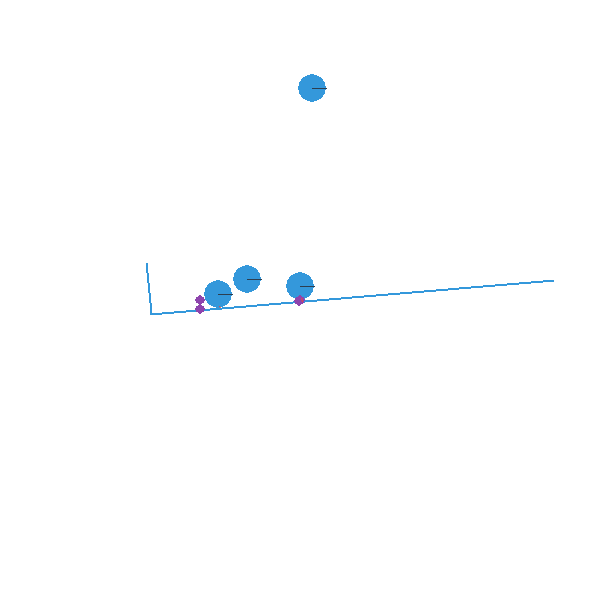

Slide and Pin Joint Demo Step by Step¶
This is a step by step tutorial explaining the demo slide_and_pinjoint.py included in pymunk. You will find a screenshot of it in the list of examples. It is probably a good idea to have the file near by if I miss something in the tutorial or something is unclear.
Before we start¶
For this tutorial you will need:
- Python (of course)
- Pygame (found at www.pygame.org)
- Pymunk
Pygame is required for this tutorial and some of the included demos, but it is not required to run just pymunk. Pymunk should work just fine with other similar libraries as well, for example you could easily translate this tutorial to use Pyglet instead.
Pymunk is built on top of the 2d physics library Chipmunk. Chipmunk itself is written in C meaning Pymunk need to call into the c code. The Cffi library helps with this, however if you are on a platform that I haven’t been able to compile it on you might have to do it yourself. The good news is that it is very easy to do, in fact if you got Pymunk by Pip install its arelady done!
When you have pymunk installed, try to import it from the python prompt to make sure it works and can be imported:
>>> import pymunk
If you get an error message it might be because pymunk could not find the chipmunk library that it depends on. If you install pymunk with pip or setup.py install everything should already be correct, but if you got the source and want to use it as a stand alone folder you need to build it inplace:
> python setup.py build_ext --inplace
More information on installation can be found here: Installation
If it doesnt work or you have some kind of problem, feel free to write a post in the chipmunk forum, contact me directly or add your problem to the issue tracker: Contact & Support
An empty simulation¶
Ok, lets start. Chipmunk (and therefore pymunk) has a couple of central concepts, which is explained pretty good in this citation from the Chipmunk docs:
- Rigid bodies
- A rigid body holds the physical properties of an object. (mass, position, rotation, velocity, etc.) It does not have a shape by itself. If you’ve done physics with particles before, rigid bodies differ mostly in that they are able to rotate.
- Collision shapes
- By attaching shapes to bodies, you can define the a body’s shape. You can attach many shapes to a single body to define a complex shape, or none if it doesn’t require a shape.
- Constraints/joints
- You can attach joints between two bodies to constrain their behavior.
- Spaces
- Spaces are the basic simulation unit in Chipmunk. You add bodies, shapes and joints to a space, and then update the space as a whole.
The documentation for Chipmunk can be found here: http://chipmunk-physics.net/release/ChipmunkLatest-Docs/ It is for the c-library but is a good complement to the Pymunk documentation as the concepts are the same, just that Pymunk is more pythonic to use.
The API documentation for Pymunk can be found here: API Reference.
Anyway, we are now ready to write some code:
import sys
import pygame
from pygame.locals import *
import pymunk #1
def main():
pygame.init()
screen = pygame.display.set_mode((600, 600))
pygame.display.set_caption("Joints. Just wait and the L will tip over")
clock = pygame.time.Clock()
space = pymunk.Space() #2
space.gravity = (0.0, -900.0)
while True:
for event in pygame.event.get():
if event.type == QUIT:
sys.exit(0)
elif event.type == KEYDOWN and event.key == K_ESCAPE:
sys.exit(0)
screen.fill((255,255,255))
space.step(1/50.0) #3
pygame.display.flip()
clock.tick(50)
if __name__ == '__main__':
sys.exit(main())
The code will display a blank window, and will run a physics simulation of an empty space.
- We need to import pymunk in order to use it...
- We then create a space and set its gravity to something good. Remember that what is important is what looks good on screen, not what the real world value is. -900 will make a good looking simulation, but feel free to experiment when you have the full code ready.
- In our game loop we call the step() function on our space. The step function steps the simulation one step forward in time.
Note
It is best to keep the step size constant and not adjust it depending on the framerate. The physic simulation will work much better with a constant step size.
Falling balls¶
The easiest shape to handle (and draw) is the circle. Therefore our next step is to make a ball spawn once in while. In many of the example demos all code is in one big pile in the main() function as they are so small and easy, but I will extract some methods in this tutorial to make it more easy to follow. First, a function to add a ball to a space:
def add_ball(space):
mass = 1
radius = 14
moment = pymunk.moment_for_circle(mass, 0, radius) # 1
body = pymunk.Body(mass, moment) # 2
x = random.randint(120, 380)
body.position = x, 550 # 3
shape = pymunk.Circle(body, radius) # 4
space.add(body, shape) # 5
return shape
- All bodies must have their moment of inertia set. If our object is a normal ball we can use the predefined function moment_for_circle to calculate it given its mass and radius. However, you could also select a value by experimenting with what looks good for your simulation.
- After we have the inertia we can create the body of the ball.
- And we set its position
- And in order for it to collide with things, it needs to have one (or many) collision shape(s).
- Finally we add the body and shape to the space to include it in our simulation.
Now that we can create balls we want to display them. Either we can use the built in pymunk_util package do draw the whole space directly, or we can do it manually. The debug drawing functions included with Pymunk are good for putting something together easy and quickly, while a polished game for example most probably will want to make its own drawing code.
If we want to draw manually, our draw function could look something like this:
def draw_ball(screen, ball):
p = int(ball.body.position.x), 600-int(ball.body.position.y)
pygame.draw.circle(screen, (0,0,255), p, int(ball.radius), 2)
And then called in this way (given we collected all the ball shapes in a list called balls):
for ball in balls:
draw_ball(screen, ball)
However, as we use pygame in this example we can instead use the debug_draw method already included in Pymunk to simplify a bit. In that case we first have to create a DrawOptions object with the options (mainly what surface to draw on):
draw_options = pymunk.pygame_util.DrawOptions(screen)
And after that when we want to draw all our shapes we would just do it in this way:
space.debug_draw(draw_options)
Most of the examples included with Pymunk uses this way of drawing.
With the add_ball function and the debug_draw call and a little code to spawn balls you should see a couple of balls falling. Yay!
import sys, random
import pygame
from pygame.locals import *
import pymunk
#def add_ball(space):
def main():
pygame.init()
screen = pygame.display.set_mode((600, 600))
pygame.display.set_caption("Joints. Just wait and the L will tip over")
clock = pygame.time.Clock()
space = pymunk.Space()
space.gravity = (0.0, -900.0)
balls = []
draw_options = pymunk.pygame_util.DrawOptions(screen)
ticks_to_next_ball = 10
while True:
for event in pygame.event.get():
if event.type == QUIT:
sys.exit(0)
elif event.type == KEYDOWN and event.key == K_ESCAPE:
sys.exit(0)
ticks_to_next_ball -= 1
if ticks_to_next_ball <= 0:
ticks_to_next_ball = 25
ball_shape = add_ball(space)
balls.append(ball_shape)
space.step(1/50.0)
screen.fill((255,255,255))
space.debug_draw(draw_options)
pygame.display.flip()
clock.tick(50)
if __name__ == '__main__':
main()
A static L¶
Falling balls are quite boring. We don’t see any physics simulation except basic gravity, and everyone can do gravity without help from a physics library. So lets add something the balls can land on, two static lines forming an L. As with the balls we start with a function to add an L to the space:
def add_static_L(space):
body = pymunk.Body(body_type = pymunk.Body.STATIC) # 1
body.position = (300, 300)
l1 = pymunk.Segment(body, (-150, 0), (255, 0), 5) # 2
l2 = pymunk.Segment(body, (-150, 0), (-150, 50), 5)
space.add(l1, l2) # 3
return l1,l2
- We create a “static” body. The important step is to never add it to the space like the dynamic ball bodies. Note how static bodies are created by setting the body_type of the body.
- A line shaped shape is created here.
- Again, we only add the segments, not the body to the space.
Since we use Space.debug_draw to draw the space we dont need to do any special draw code for the Segments, but I still include a possible draw function here just to show what it could look like:
def draw_lines(screen, lines):
for line in lines:
body = line.body
pv1 = body.position + line.a.rotated(body.angle) # 1
pv2 = body.position + line.b.rotated(body.angle)
p1 = to_pygame(pv1) # 2
p2 = to_pygame(pv2)
pygame.draw.lines(screen, THECOLORS["lightgray"], False, [p1,p2])
- In order to get the position with the line rotation we use this calculation. line.a is the first endpoint of the line, line.b the second. At the moment the lines are static, and not rotated so we don’t really have to do this extra calculation, but we will soon make them move and rotate.
- This is a little function to convert coordinates from pymunk to pygame world. Now that we have it we can use it in the draw_ball() function as well. We want to flip the y coordinate (-p.y), and then offset it with the screen height (+600). It looks like this:
def to_pygame(p):
"""Small hack to convert pymunk to pygame coordinates"""
return int(p.x), int(-p.y+600)
With the full code we should something like the below, and now we should see an inverted L shape in the middle will balls spawning and hitting the shape.
import sys, random
import pygame
from pygame.locals import *
import pymunk
import math
#def to_pygame(p):
#def add_ball(space):
#def add_static_l(space):
def main():
pygame.init()
screen = pygame.display.set_mode((600, 600))
pygame.display.set_caption("Joints. Just wait and the L will tip over")
clock = pygame.time.Clock()
space = pymunk.Space()
space.gravity = (0.0, -900.0)
lines = add_static_L(space)
balls = []
draw_options = pymunk.pygame_util.DrawOptions(screen)
ticks_to_next_ball = 10
while True:
for event in pygame.event.get():
if event.type == QUIT:
sys.exit(0)
elif event.type == KEYDOWN and event.key == K_ESCAPE:
sys.exit(0)
ticks_to_next_ball -= 1
if ticks_to_next_ball <= 0:
ticks_to_next_ball = 25
ball_shape = add_ball(space)
balls.append(ball_shape)
space.step(1/50.0)
screen.fill((255,255,255))
space.debug_draw(draw_options)
pygame.display.flip()
clock.tick(50)
if __name__ == '__main__':
(main()
Joints (1)¶
A static L shape is pretty boring. So lets make it a bit more exciting by adding two joints, one that it can rotate around, and one that prevents it from rotating too much. In this part we only add the rotation joint, and in the next we constrain it. As our static L shape won’t be static anymore we also rename the function to add_L().
def add_L(space):
rotation_center_body = pymunk.Body(body_type = pymunk.Body.STATIC) # 1
rotation_center_body.position = (300, 300)
body = pymunk.Body(10, 10000) # 2
body.position = (300, 300)
l1 = pymunk.Segment(body, (-150, 0), (255.0, 0.0), 5.0)
l2 = pymunk.Segment(body, (-150.0, 0), (-150.0, 50.0), 5.0)
rotation_center_joint = pymunk.PinJoint(body, rotation_center_body, (0,0), (0,0)) # 3
space.add(l1, l2, body, rotation_center_joint)
return l1,l2
- This is the rotation center body. Its only purpose is to act as a static point in the joint so the line can rotate around it. As you see we never add any shapes to it.
- The L shape will now be moving in the world, and therefor it can no longer be a static body. I have precalculated the inertia to 10000. (ok, I just took a number that worked, the important thing is that it looks good on screen!).
- A pin joint allow two objects to pivot about a single point. In our case one of the objects will be stuck to the world.
Joints (2)¶
In the previous part we added a pin joint, and now its time to constrain the rotating L shape to create a more interesting simulation. In order to do this we modify the add_L() function:
def add_L(space):
rotation_center_body = pymunk.Body(body_type = pymunk.Body.STATIC)
rotation_center_body.position = (300,300)
rotation_limit_body = pymunk.Body(body_type = pymunk.Body.STATIC) # 1
rotation_limit_body.position = (200,300)
body = pymunk.Body(10, 10000)
body.position = (300,300)
l1 = pymunk.Segment(body, (-150, 0), (255.0, 0.0), 5.0)
l2 = pymunk.Segment(body, (-150.0, 0), (-150.0, 50.0), 5.0)
rotation_center_joint = pymunk.PinJoint(body, rotation_center_body, (0,0), (0,0))
joint_limit = 25
rotation_limit_joint = pymunk.SlideJoint(body, rotation_limit_body, (-100,0), (0,0), 0, joint_limit) # 2
space.add(l1, l2, body, rotation_center_joint, rotation_limit_joint)
return l1,l2
- We add a body..
- Create a slide joint. It behaves like pin joints but have a minimum and maximum distance. The two bodies can slide between the min and max, and in our case one of the bodies is static meaning only the body attached with the shapes will move.
Ending¶
You might notice that we never delete balls. This will make the simulation require more and more memory and use more and more cpu, and this is of course not what we want. So in the final step we add some code to remove balls from the simulation when they are bellow the screen.
balls_to_remove = []
for ball in balls:
if ball.body.position.y < 0: # 1
balls_to_remove.append(ball) # 2
for ball in balls_to_remove:
space.remove(ball, ball.body) # 3
balls.remove(ball) # 4
- Loop the balls and check if the body.position is less than 0.
- If that is the case, we add it to our list of balls to remove.
- To remove an object from the space, we need to remove its shape and its body.
- And then we remove it from our list of balls.
And now, done! You should have an inverted L shape in the middle of the screen being filled will balls, tipping over releasing them, tipping back and start over. You can check slide_and_pinjoint.py included in pymunk, but it doesn’t follow this tutorial exactly as I factored out a couple of blocks to functions to make it easier to follow in tutorial form.
If anything is unclear, not working feel free to raise an issue on github. If you have an idea for another tutorial you want to read, or some example code you want to see included in pymunk, please write it somewhere (like in the chipmunk forum)
The full code for this tutorial is:
import sys, random
import pygame
from pygame.locals import *
import pymunk
import pymunk.pygame_util
def add_ball(space):
"""Add a ball to the given space at a random position"""
mass = 1
radius = 14
inertia = pymunk.moment_for_circle(mass, 0, radius, (0,0))
body = pymunk.Body(mass, inertia)
x = random.randint(120,380)
body.position = x, 550
shape = pymunk.Circle(body, radius, (0,0))
space.add(body, shape)
return shape
def add_L(space):
"""Add a inverted L shape with two joints"""
rotation_center_body = pymunk.Body(body_type = pymunk.Body.STATIC)
rotation_center_body.position = (300,300)
rotation_limit_body = pymunk.Body(body_type = pymunk.Body.STATIC)
rotation_limit_body.position = (200,300)
body = pymunk.Body(10, 10000)
body.position = (300,300)
l1 = pymunk.Segment(body, (-150, 0), (255.0, 0.0), 5.0)
l2 = pymunk.Segment(body, (-150.0, 0), (-150.0, 50.0), 5.0)
rotation_center_joint = pymunk.PinJoint(body, rotation_center_body, (0,0), (0,0))
joint_limit = 25
rotation_limit_joint = pymunk.SlideJoint(body, rotation_limit_body, (-100,0), (0,0), 0, joint_limit)
space.add(l1, l2, body, rotation_center_joint, rotation_limit_joint)
return l1,l2
def main():
pygame.init()
screen = pygame.display.set_mode((600, 600))
pygame.display.set_caption("Joints. Just wait and the L will tip over")
clock = pygame.time.Clock()
space = pymunk.Space()
space.gravity = (0.0, -900.0)
lines = add_L(space)
balls = []
draw_options = pymunk.pygame_util.DrawOptions(screen)
ticks_to_next_ball = 10
while True:
for event in pygame.event.get():
if event.type == QUIT:
sys.exit(0)
elif event.type == KEYDOWN and event.key == K_ESCAPE:
sys.exit(0)
ticks_to_next_ball -= 1
if ticks_to_next_ball <= 0:
ticks_to_next_ball = 25
ball_shape = add_ball(space)
balls.append(ball_shape)
screen.fill((255,255,255))
balls_to_remove = []
for ball in balls:
if ball.body.position.y < 150:
balls_to_remove.append(ball)
for ball in balls_to_remove:
space.remove(ball, ball.body)
balls.remove(ball)
space.debug_draw(draw_options)
space.step(1/50.0)
pygame.display.flip()
clock.tick(50)
if __name__ == '__main__':
main()